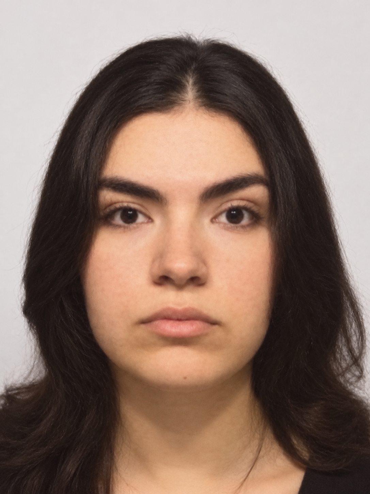
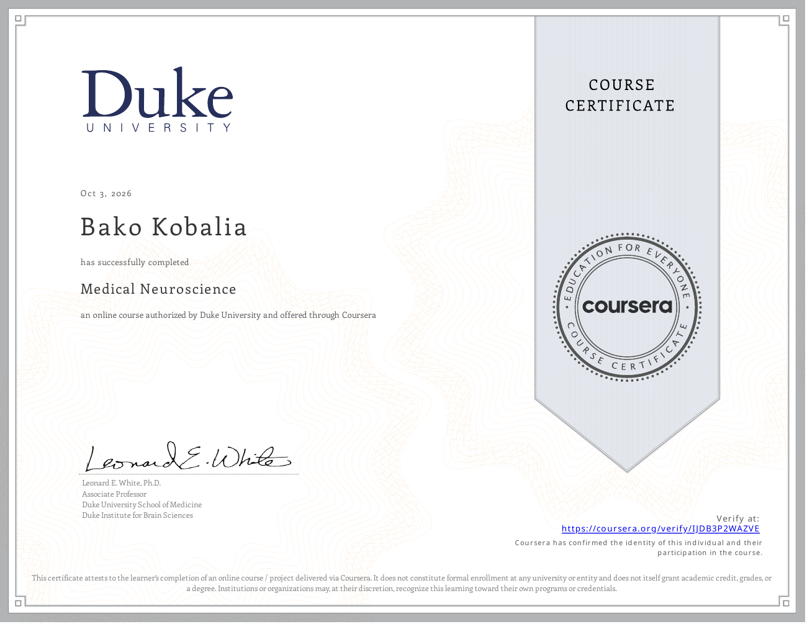
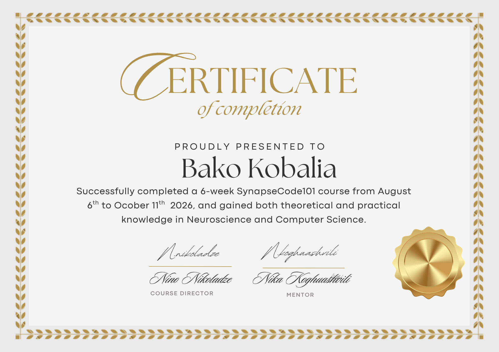
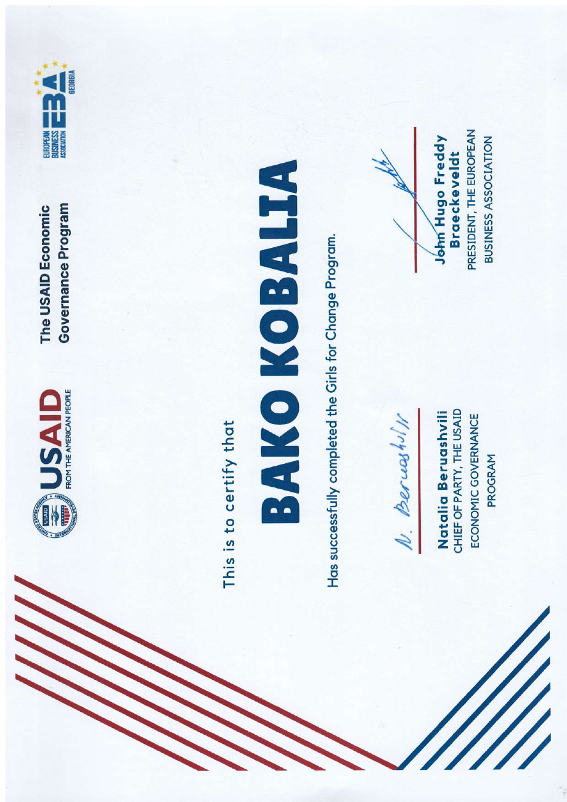
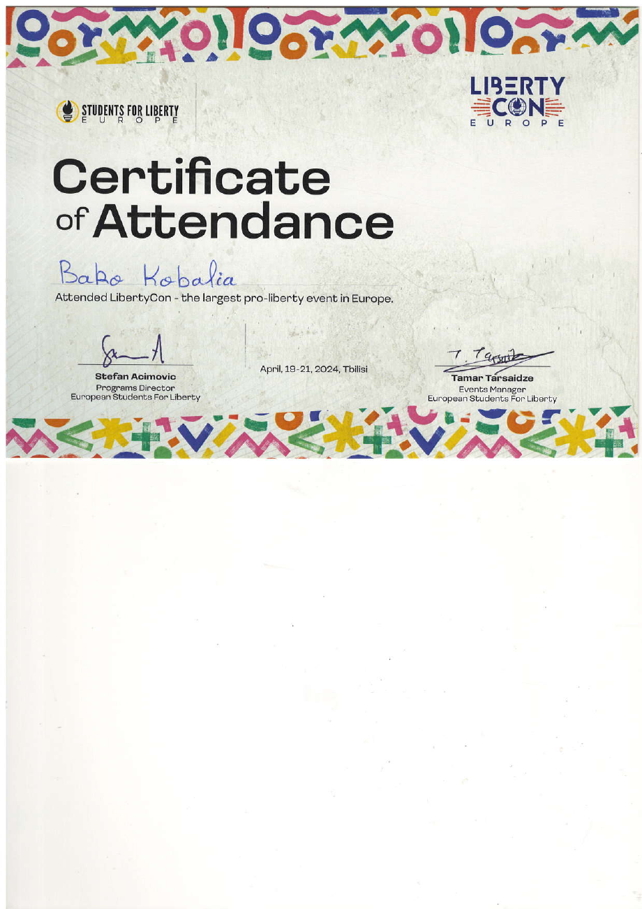
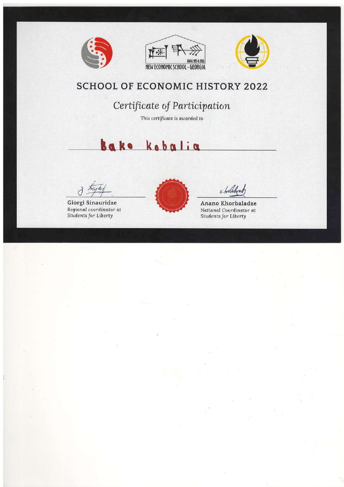

Browser experiment · SynapseCode101 project
Color Clash
A Stroop-inspired task exploring how relevant and irrelevant information influence decisions. Developed with AI assistance, with automatic response uploads and a protected researcher dashboard.
Cognitive neuroscience · Social sciences · Writing
Researching perception.
Writing about people.
Exploring how we perceive, think, and make sense of our social world—through behavioural research, experiments, and academic writing.
Explore my work
01 / Research & experiments
From face perception and temporal expectation to the social contexts that shape behaviour.
Browser experiment · SynapseCode101 project
A Stroop-inspired task exploring how relevant and irrelevant information influence decisions. Developed with AI assistance, with automatic response uploads and a protected researcher dashboard.
Behavioural experiment · In development
A visual-perception research project using jsPsych. My contributions include preparing stimuli and Georgian-language materials, implementing procedures, and testing the experiment before data collection.
Bachelor’s thesis · 2026
An experimental study of how facial gender characteristics influence time-based expectancy. The study involved 40 participants and analysis of reaction times.
Full title: The Influence of Facial Gender Characteristics on Time-Based Expectancy During a Gender Categorization Task.
Author: Bako Kobalia. Supervisor: Marina Kunchulia. Free University of Tbilisi.
Methods: A modified time–event correlation paradigm, participant-based data collection and quantitative analysis.
Junior research project · 2025
An interdisciplinary literature review examining parental emotional neglect, neurodevelopment, emotion regulation and social behaviour.
Full title: The Effects of Parental Emotional Neglect in Childhood on Neurodevelopment.
Author: Bako Kobalia. Supervisor: Marina Kunchulia. School of Governance and Social Sciences, Free University of Tbilisi.
Approach: Literature review drawing on neuroscience, developmental psychology and social research.
Quantitative group research · 2025
A questionnaire study of 236 students examining social media use, fear of missing out, anxiety and depressive symptoms.
Full title: The Impact of Social Media on Students’ Mental Health.
Co-authors: Bako Kobalia, Liza Lomsadze and Akaki Eliashvili. School of Governance and Social Sciences, Free University of Tbilisi.
Methods: Non-probability sampling, a structured questionnaire, regression, ANOVA, chi-square and correlation analysis. An observational student project exploring associations.
Qualitative group research · Course paper
An ethnographic study of collective action in Georgia, exploring how emotions and subjective attitudes relate to mobilisation and changes in protest participation.
Full title: The Role of Emotions and Subjective Attitudes in Mobilization and Changes in the Dynamics of Protests against the “Russian Law”.
Co-authors: Liliko Beriashvili, Mariam Gogia, Liza Lomsadze, Mariam Macharashvili and Bako Kobalia.
Methods: Participant observation, four ethnographic interviews and ten semi-structured interviews. Final paper for Qualitative Research Methods, School of Governance and Social Sciences.
02 / Writing
Academic commentary and conversations that connect research with lived experience.
Critical commentary · English
A critical discussion of how recent sensory history relates to current perception, examining behavioural evidence and early visual-evoked activity.
Commentary by Bako Kobalia on the 2023 study by Michele Fornaciai, Irene Togoli and Domenica Bueti.
Read the commentary PDF · 7 pagesPublished interview · Georgian · 2026
An interview with psychologist Anastasia Kitiashvili, discussing poverty, stigma, social identity and psychological well-being.
Co-authored with Anano Kavalashvili, Anna Amilakhvari and Nino Barbakadze.
სიღარიბის ფსიქო-სოციალური საფუძვლები: ინტერვიუ ანასტასია ქიტიაშვილთან
Read on Mdevari03 / Learning & participation
Additional training in neuroscience and programming, alongside civic and interdisciplinary programmes.

Completed the online Medical Neuroscience course authorised by Duke University and offered through Coursera.
Open certificate PDF ↗Verify credential ↗
A six-week educational programme combining neuroscience and programming. Color Clash was developed as part of this learning experience.
Open certificate image ↗
Certificate of completion for the Girls for Change Program.
Open original certificate PDF ↗
Attended LibertyCon Europe in Tbilisi, 19–21 April 2024.
Open certificate PDF ↗
Participated in the School of Economic History in 2022.
Open certificate PDF ↗04 / About
My background is in Governance and Social Sciences at the Free University of Tbilisi. My interests bring together cognitive neuroscience, behavioural research, and the ways people understand their social world.
I work as a research assistant in the university’s Cognitive Neuroscience Department, with experience in behavioural experimentation, stimulus preparation and browser-based experimental tasks, and exposure to EEG research.
Alongside research, I have contributed to academic interviews at Mdevari, interned with the TASO Women’s Rights Organisation, and mentored high school students and prospective university applicants during a Free University ideathon.
Literature review · Quantitative and qualitative research · Behavioural experiment design · Statistical analysis
jsPsych · Introductory Python · Excel · Canva
Georgian · English